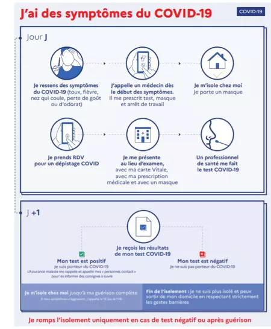

PROTEGEONS NOUS AINSI QUE NOS PROCHE EN INFORMONS !


Quels sont les mesures de prévention à envisager ?
Se laver fréquemment les mains avec de l'eau et du savon, ou en utilisant le gel hydro-alcoolique pendant 40 secondes ; Se couvrir la bouche et le nez avec un mouchoir jetable en cas de toux ou d’éternuement et se laver, juste après, les mains avec de l’eau et du savon ; Éviter tout contact étroit et garder une distance de 1 mètre des personnes présentant une fièvre et/ou des signes grippaux et/ou respiratoires ; Limiter -autant que possible- la fréquentation des établissements de santé et demandez à votre médecin de revoir vos rendez-vous ; Dans les espaces publics, évitez de toucher les surfaces (les boutons des ascenseurs, les poignées de portes, …), et si vous êtes obligés de le faire, servez-vous d’un mouchoir en papier pour couvrir la main ou les doits tout en évitant de toucher le visage et en veillant toujours à se laver les mains juste après ; Ne partagez jamais les outils et les affaires à usages personnels (les verres, les serviettes, …) ; Rester à la maison et opter pour le télétravail ; Adopter un mode de vie sain et une alimentation équilibrée riche en fruits et légumes bien lavés et veiller à ce que les viandes et les œufs soient bien cuits.